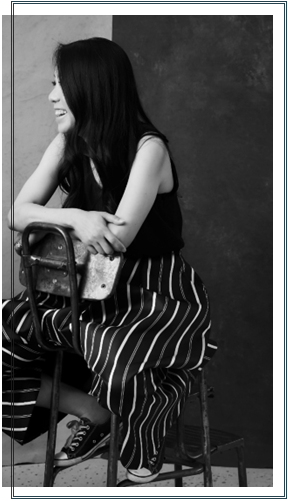

Tiffany works as a writer, passionate about shaping how thoughts, stories, moments are felt and expressed.
With a considered and collaborative approach, she works across personal and professional contexts — from speeches and tributes to letters and public addresses.
Her practice centres on what truly matters – the quiet details and the unspoken which are often difficult to articulate.
Working closely with individuals, Tiffany gathers ideas, memories and emotion before distilling them into writing that is heartfelt, sincere and touches deeply in that moment.
